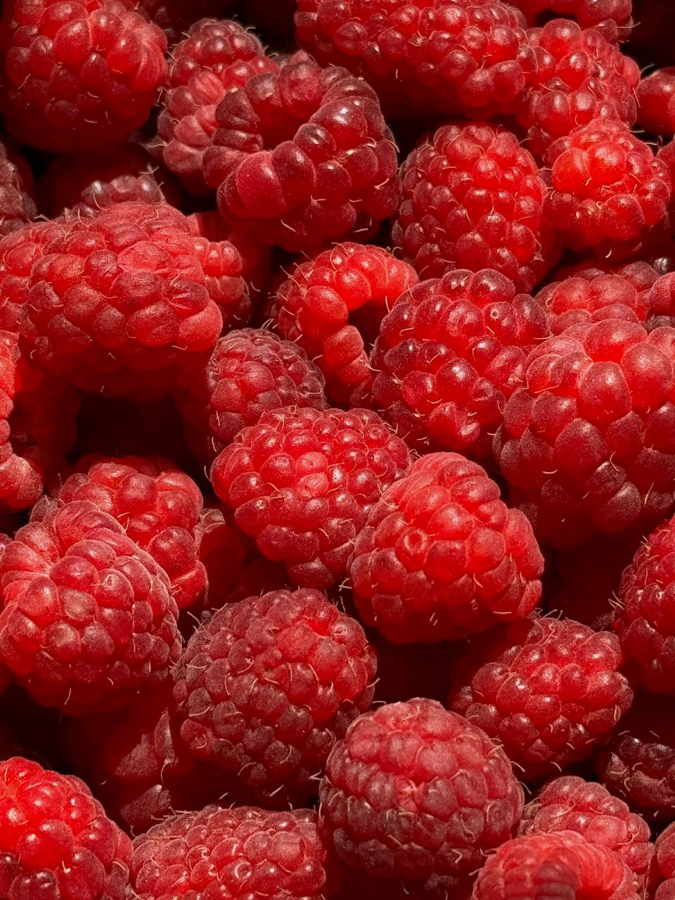
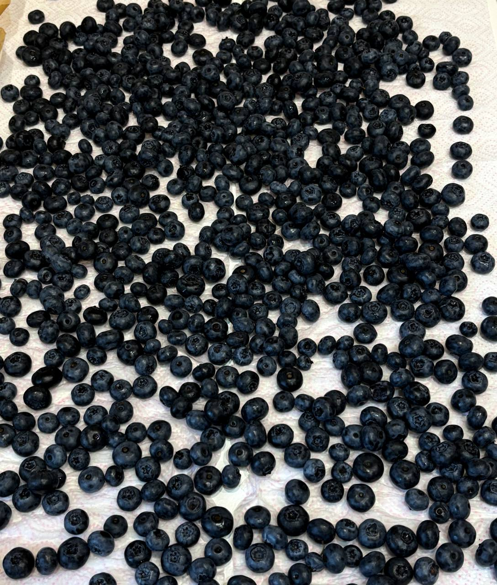
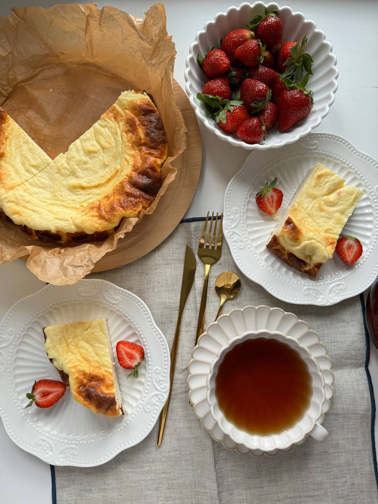
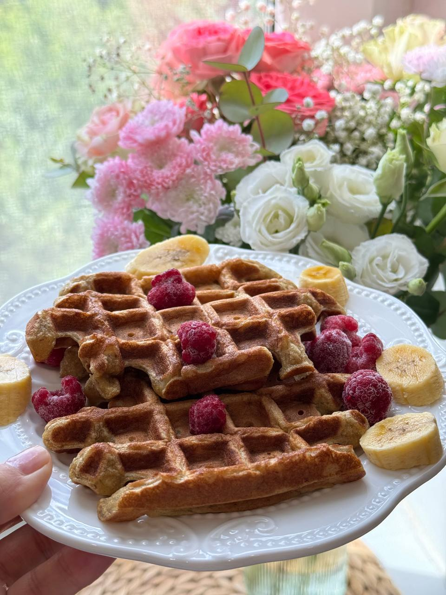
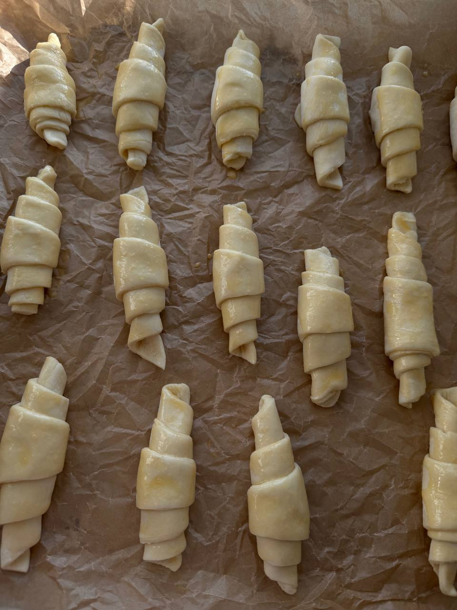
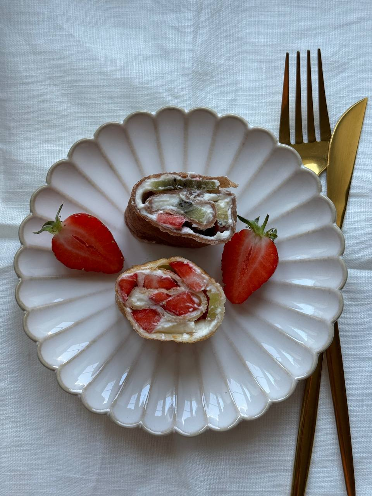
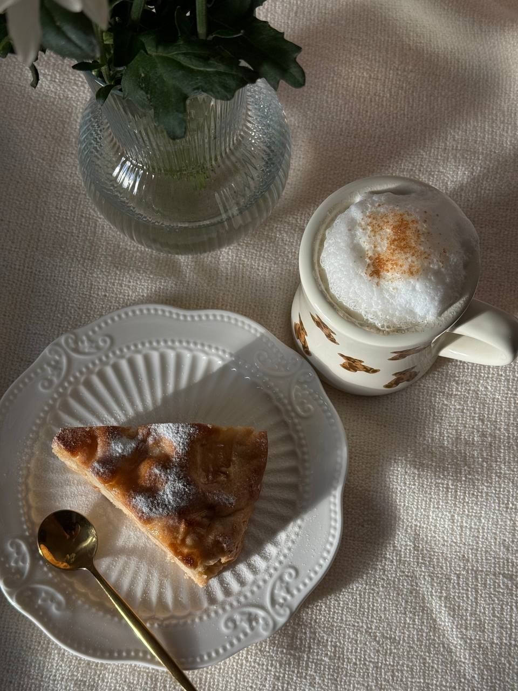
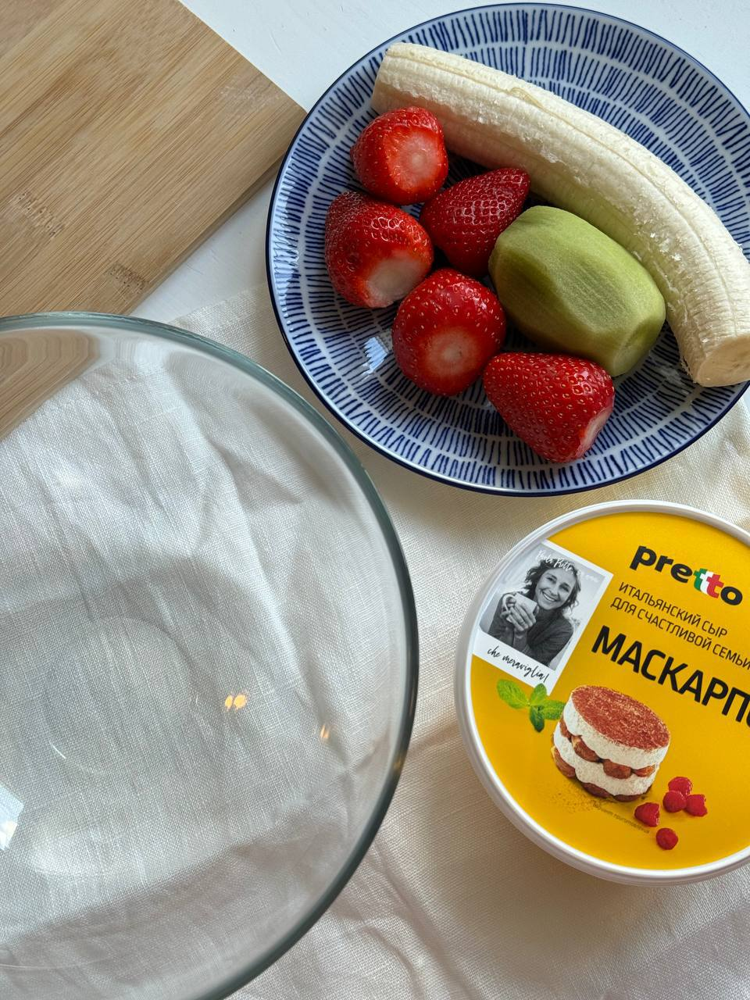

Мои страдания
Мои летние каникулы
Я летом помогала родителям и была всегда занята, поэтому я не могла заниматься своими делами. Из-за этого я не гуляла часто, но иногда все же гуляла с ними. Я занималась готовкой еды и много чем дома. Но все же лето прошло очень хорошо. Много помогала по хозяйству и еще была няней.
       